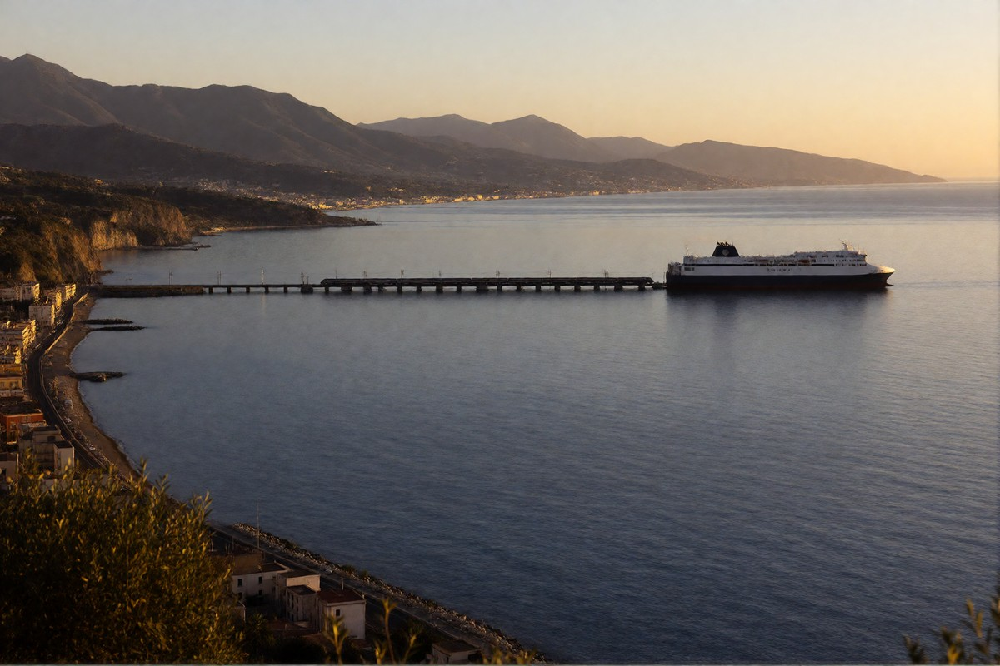

Sicilia · 10 novembre 2026
«Il ponte può cambiare la Sicilia»: lo dice chi vive di traghetti

Vincenzo Franza, amministratore delegato di Caronte e Tourist isole minori, torna a dirsi favorevole all'opera. Sono sue valutazioni: nell'articolo da cui nascono non ci sono studi a sostegno né voci contrarie.
di Franco Zanghì
Il ponte sullo Stretto di Messina «è l'infrastruttura che può modificare la realtà della nostra isola». A dirlo, il 10 novembre 2026, non è un politico ma l'amministratore delegato di una compagnia di traghetti.
Chi parla
Vincenzo Franza è amministratore delegato di Caronte e Tourist isole minori, la società del gruppo Caronte e Tourist che porta passeggeri, auto e camion verso le isole siciliane. È lo stesso gruppo dei traghetti che ogni giorno attraversano lo Stretto. Favorevole al ponte si è detto più volte, e questa è una posizione nota.
È un dettaglio che conta, perché nel dibattito sul ponte la compagnia di navigazione viene di solito descritta come la parte che avrebbe più da perdere. Franza dice il contrario, e lo dice in pubblico da tempo.
I treni
Per Franza l'utilità del ponte è soprattutto ferroviaria: eliminerebbe i tempi lunghi del traghettamento dei convogli e renderebbe la Sicilia, dal punto di vista dei trasporti, non più un'isola ma una penisola.
Le merci
Il secondo argomento riguarda i porti. Secondo Franza, scali grandi come Augusta, Catania e Palermo potrebbero diventare l'interfaccia con l'Africa per merci e prodotti: oggi, sostiene, le linee che partono dall'Africa arrivano in Francia o altrove, ma non in Sicilia. Che senso ha, si chiede, portare merci in un'isola caricandole su un treno che poi deve essere traghettato.
Con il ponte, dice, una merce potrebbe arrivare fino al nord Europa in un giorno e mezzo: un aspetto che, a suo giudizio, cambierebbe completamente il modello dei trasporti.
L'ambiente
Franza ha parlato anche di decarbonizzazione delle isole minori. La società, spiega, ha puntato sulle navi a gas naturale liquefatto: la Nerea viaggia già così verso le isole minori, e altre due navi a gas, una della Regione siciliana e una ancora da costruire, saranno impiegate per le Pelagie e per Pantelleria. L'obiettivo dichiarato è portare il gas anche nelle isole, per le loro centrali elettriche e poi per le case.
Il punto
Sono valutazioni dell'amministratore delegato di una compagnia di traghetti, cioè di una parte interessata, e vanno lette come tali: le cifre citate sono sue dichiarazioni, non dati verificati.
Nell'articolo da cui nasce questa notizia non ci sono studi a sostegno né voci contrarie. Resta però un fatto che vale la pena registrare: il ponte lo chiede anche chi oggi vive del mare che quel ponte attraverserebbe.
Fonti
- ANSA Sicilia, «Franza: ponte sullo Stretto può modificare la realtà della Sicilia», 10 novembre 2026
Fonte unica, e parte interessata: tutte le valutazioni e le cifre riportate sono dichiarazioni di Vincenzo Franza.